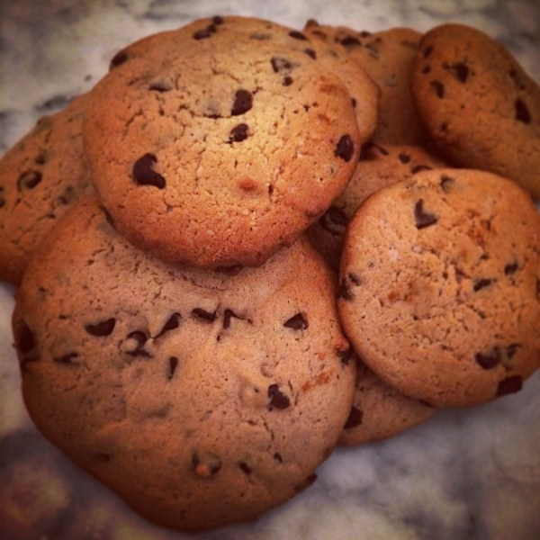

cookies

4 personnes
- 95g beurre mou
- 150g farine
- 1/2 cuillere à soupe de levure
- sel
- 1 tablette chocolat
- noix
- 90g sucre roux
- 1 sachet sucre vanillé
- 1 oeuf
- 2 cuillères à soupe de cacao
- noisettes
- amandes
Préparation
Temps total : 18min
Préparation : 10 min
Repos : -
Cuisson : 8 min
- Incorporer le sucre roux au beurre travaillé en pommade (bien mou à température ambiante mais pas liquide). Il faut de la cassonade, c'est ça ou rien car c'est un des secrets des cookies
- Ajouter le sucre vanillé, et l'œuf, bien mélanger.
- Incorporer la farine tamisée avec la levure, le sel et le cacao.
- Rajouter les pépites de chocolats et amandes pilées (par exemple), plus il y a de garniture, plus le cookie prend son relief de cookie...
- N’hésitez pas à travailler la pâte à la main, pour un mélange homogène, former un boudin et laisser une heure au frigo. (Ou 1/2 h au minimum mais c'est important ça aussi!)
- Préchauffer le four à 180-200°C (thermostat 6).
- Sortir ensuite la préparation du frigo, couper des tranches égales de taille moyenne, les répartir sur un papier sulfurisé suffisamment écarté pour que cela puisse gonfler.
- Faire cuire 8 min à four déjà chaud (important), sortir les cookies même si cela à l’air mou, car ils durcissent à l’air libre.